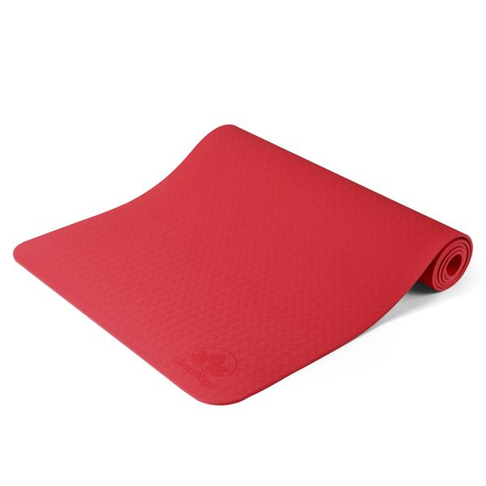

Matt's Mats
Yoga Mat

Price: $24.49
- EXTRA THICK YOGA MAT FOR A BETTER WORK OUT: The extra thick 6mm mat protects joints without compromising support or stability. And at 72" long x 25 1/4" wide it's a large yoga mat suitable for short and tall yogis alike
- GRIPPY NOT SLIPPY: wide yoga mat has reversible non-slip surfaces so you can perform any movement with confidence. Wavy underside stops workout mat from sliding on floor. The subtly textured surface prevents hands and feet from slipping out of position so you can hold poses no matter how vigorous your practice gets.
- ORDER TODAY, RISK FREE: In the unlikely event you're not 100% happy with your purchase, we'll send you a free replacement or give you a full refund, no questions asked!
- 100% NON-TOXIC AND SAFE TO USE: We believe in creating premium quality eco friendly products that are safe for your body, mind and spirit. The yoga mat is made from TPE foam.
- DESIGNED TO WITHSTAND THE TOUGHEST (AND SWEATIEST) OF SESSIONS: This durable sports and fitness mat will hold up to the wear and tear of regular practice. Constructed using anti tear technology, it won't rip, shred or stretch with use. The closed-cell surface locks out germs, dirt, and moisture to keep bacteria and stinky odors at bay. Easy to wipe clean